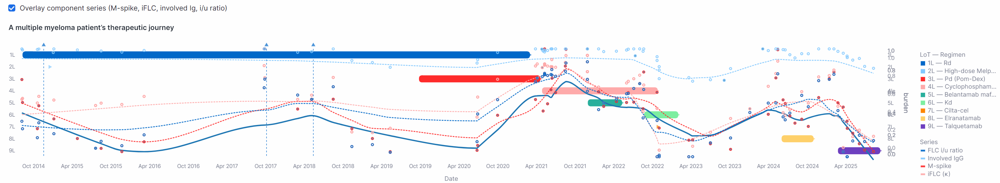

Cancer is not just a diagnosis. It’s a story.
We help patients and physicians navigate it with clarity, dignity, and direction.
Understand where you are, what matters now, and what might come next. We turn medical data into clear, human stories.
Reclaim your time and presence. Our tools synthesize complex histories and patient context into clarity you can act on.
See beyond static endpoints. Discover the lived trajectory of real patients, with insight grounded in ethical intelligence.
From our multi-omics patient trajectory models
We began in silence — taught not to speak the word “cancer.” At areteBio, we transform that silence into insight. Our AI listens across the cancer journey to empower patients, support clinicians, and connect science with story. This is medicine with arete: excellence with purpose.